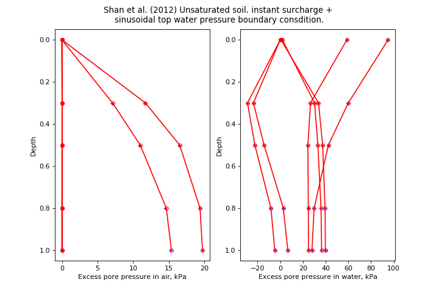

speccon example code: speccon1d_unsat_sinusoidal_top_water_BC_shanetal2012.py¶
# speccon1d_unsat example (if viewing this in docs, plots are at bottom of page)
# Unsaturated soil 1 dimensional consolidation. sinusoidal varying top water
# pressure boundary condition.
# Compare with Shan et al. (2012) Fig2a and Fig5a
# The orignal Shan et al. (2012)
# is implemented separately in geotecha.consolidation.shanetal2012.
#note there are more examples like this in the geotecha tesing routines for
# soeccon1d_unsat. Look in the source code.
# Shan, Zhendong, Daosheng Ling, and Haojiang Ding. 2012. 'Exact
# Solutions for One-dimensional Consolidation of Single-layer
# Unsaturated Soil'. International Journal for Numerical and
# Analytical Methods in Geomechanics 36 (6): 708-22.
# doi:10.1002/nag.1026.
# This file should be run with python. It will not work if run with the
# speccon1d_vr.exe script program.
from __future__ import division, print_function
import numpy as np
from geotecha.speccon.speccon1d_unsat import Speccon1dUnsat
import matplotlib.pyplot as plt
#PTIB drainage
#dsig = 100kPa instantly
#uwtop = sin(2*np.pi/1e8)
#
#ka/kw=1
#
#other data:
#n = 0.50
#S=0.80
#kw=10^10m/s
#m1kw=-0.5x10**4 kPa-1
#h=10m
#mw2=-2.0x10**4 kPa-1
#ma1k=-2.0x10**4 kPa-1
#ma2=1.0x10**4 kPa-1
#
#gamw= 10000N
#ua_=uatm=101kPa,
#R=8.31432J/molK
#t0 = 20 degrees C,
#T =(t0+273.16)K,
#wa=29x10**3 kg/mol
#
#Note to get (dua, duw) = (0.2, 0.4) * dsig need ua_=111kPa
#Expected values
#t = timeua, tuw, tset = time values for pore air and pore water pressure settlement output
#z = depth values
#pora, porw = excess pore pressure at time t and depth z in air and soil.
z = np.array([0, 3.0, 5.0, 8.0, 10.0])/10
t = np.array([1e6,3e6, 1e8,3e8, 1e9, 2e9 ])
porw = np.array(
[[ 6.28314397e-01, 1.88484397e+00, 5.87785252e+01,
9.51056516e+01, -2.44929360e-14, -4.89858720e-14],
[ 3.36836720e+01, 3.02084854e+01, 2.66821009e+01,
6.00250385e+01, -2.37006068e+01, -2.89247778e+01],
[ 3.73258377e+01, 3.31242502e+01, 2.43606807e+01,
4.24445988e+01, -1.42733983e+01, -2.24098737e+01],
[ 3.95179974e+01, 3.58660188e+01, 2.47525077e+01,
2.98945531e+01, 2.68168932e+00, -8.26117630e+00],
[ 3.97911703e+01, 3.64059255e+01, 2.48530634e+01,
2.79500925e+01, 6.68126128e+00, -4.82458233e+00]])
pora = np.array(
[[ 0.00000000e+00, 0.00000000e+00, 0.00000000e+00,
0.00000000e+00, 0.00000000e+00, 0.00000000e+00],
[ 1.16396722e+01, 7.03990486e+00, 1.82548313e-02,
2.16231937e-02, 1.29313648e-02, 1.60933200e-02],
[ 1.64604603e+01, 1.08992249e+01, 1.91064304e-02,
3.24439239e-02, 6.56045792e-03, 1.14850996e-02],
[ 1.93620127e+01, 1.45282414e+01, 1.83839252e-02,
4.01955433e-02, -4.28351741e-03, 2.33970574e-03],
[ 1.97235856e+01, 1.52428642e+01, 1.82305019e-02,
4.14018795e-02, -6.81509232e-03, 1.48876019e-04]])
#############################
##shanetal2012 input to generate expected values
#kw = 1e-10
#ka = 1 * kw
#H=10
#Cw=-0.75
#Cvw=-5e-8
#Ca = -0.0775134
#Cva=-64504.4 * ka
#drn=1
#Csw=0.25
#Csa=0.155027
#uwi=(40, 40)
#uai=(20, 20)
#nterms=200
#f=f1=f2=f3=f4=None
#f1 = dict([('type', 'sin'), ('q0',100.0), ('omega',2*np.pi / 1e9)])
#z = np.array([0, 3.0, 5.0, 8.0, 10.0])
#t = np.array([1e6,3e6, 1e8,3e8, 1e9, 2e9 ])
#
#porw, pora = shanetal2012(z, t, H, Cw, Cvw, Ca, Cva, drn, Csw, Csa,
# uwi, uai, nterms, f=f, f1=f1, f2=f2, f3=f3, f4=f4)
reader = ("""\
H = 10 #m
drn = 1
neig = 30
mvref = 1e-4 #1/kPa
kwref = 1.0e-10 #m/s
karef = kwref * 1 #m/s
Daref = karef / 10 # from equation ka=Da*g
wa = 29.0e-3 #kg / mol
R = 8.31432 #J/(mol.K)
ua_= 111 #kPa
T = 273.16 + 20
dTa = Daref /(mvref) / (wa*ua_/(R*T))/ H ** 2
dTw = kwref / mvref / 10 / H**2
dT = max(dTw, dTa)
kw = PolyLine([0,1], [1,1])
Da = PolyLine([0,1], [1,1])
S = PolyLine([0,1], [0.8] * 2)
n = PolyLine([0,1], [0.5] * 2)
m1kw = PolyLine([0,1], [-0.5]*2)
m2w = PolyLine([0,1], [-2.0]*2)
m1ka = PolyLine([0,1], [-2.0]*2)
m2a = PolyLine([0,1], [1.0]*2)
surcharge_vs_depth = PolyLine([0,1], [1,1])
surcharge_vs_time = PolyLine([0, 0, 1e12], [0, 100, 100])
wtop_vs_time = PolyLine([0, 0.0, 1e12], [0,100,100])
wtop_omega_phase = (2*np.pi/1e9, -np.pi/2)
ppress_z = np.{z}
#avg_ppress_z_pairs = [[0,1]]
#settlement_z_pairs = [[0,1]]
tvals = np.{t}
#ppress_z_tval_indexes = slice(None, len(tua)+len(tuw))
#avg_ppress_z_pairs_tval_indexes = slice(None, None)#[0,4,6]
#settlement_z_pairs_tval_indexes = slice(len(tua)+len(tuw),len(tua)+len(tuw)+len(tset))
save_data_to_file= False
save_figures_to_file= False
show_figures= False
""".format(t=repr(t), z = repr(z)))
a = Speccon1dUnsat(reader)
a.make_all()
# custom plots
title = ("Shan et al. (2012) Unsaturated soil. instant surcharge + \nsinusoidal top water pressure boundary consdition.")
fig = plt.figure(figsize=(9,6))
fig.suptitle(title)
#z vs ua
ax1 = fig.add_subplot("121")
ax1.set_xlabel('Excess pore pressure in air, kPa')
ax1.set_ylabel('Depth')
ax1.invert_yaxis()
ax1.plot(pora, z,
ls="None", color='Blue', marker="+", ms=5,
label='expected')
ax1.plot(a.pora, z,
ls='-', color='red', marker='o', ms=5, markerfacecolor='None',
markeredgecolor='red',
label='calculated')
#z vs uw
ax2 = fig.add_subplot("122")
ax2.set_xlabel('Excess pore pressure in water, kPa')
ax2.set_ylabel('Depth')
ax2.invert_yaxis()
ax2.plot(porw, z,
ls="None", color='Blue', marker="+", ms=5,
label='expected')
ax2.plot(a.porw, z,
ls='-', color='red', marker='o', ms=5, markerfacecolor='None',
markeredgecolor='red',
label='calculated')
fig.subplots_adjust(top=0.9)#, bottom=0.15, left=0.13, right=0.94)
#fig.tight_layout()
plt.show()
(Source code, png, hires.png, pdf)
{kind=link}
{kind=link}
